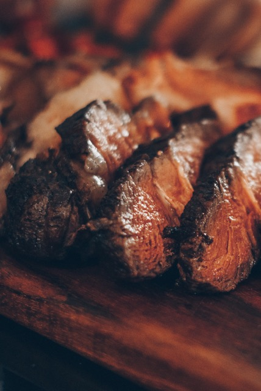

Steak
Back to index

This is a grill recipe my wife and I have been making for over 30 years. The sesame flavor is fantastic, and the London broil comes out tender as can be. Turn it twice per side to get the diamond-shaped grill marks and people will rave!
Ingredients
- ½ cup sesame oil
- ⅓ cup sesame seeds
- 4 yellow onions, sliced
- ½ cup soy sauce
- ¼ cup lemon juice
- 1 tablespoon sugar
- 2 cloves garlic, crushed
- ¼ teaspoon whole black peppercorns
- 1 (2.5 pound) London broil steak
Directions
- Heat sesame oil in a skillet over medium-high heat. Cook and stir sesame seeds in hot oil until golden brown, about 1 minute. Transfer seeds and oil immediately to a large glass or ceramic baking dish.
- Stir onions, soy sauce, lemon juice, sugar, garlic, and peppercorns into sesame mixture until marinade is evenly combined. Place steak into marinade, turning to coat all sides. Cover baking dish with plastic wrap and refrigerate, turning steak often, for at least 4 hours or up to overnight.
- Preheat an outdoor grill for medium-high heat and lightly oil the grate
- Cook the steak on the preheated grill until meat starts to firm and turns reddish-pink and juicy in the center, about 10 minutes per side. An instant-read thermometer inserted into the center should read 130 degrees F (54 degrees C) for medium rare. Transfer steak to a plate, cover with aluminum foil, and let rest for about 10 minutes. Slice across the grain.
Sources:
All recipes
Unsplash